About Me
I'm a BSME-degreed Mechanical Engineer with over a decade of experience bringing complex hardware and robotic systems from R&D through to reliable field operation. Currently working as a Mechatronics Engineer at Relentless Adrenaline (Google DeepMind), I've spent my career building deep technical expertise across the full system lifecycle within the Alphabet/Google ecosystem — including DeepMind, Mineral.ai, Waymo, and Street View.
I specialize in multi-sensor platform integration, deep-level hardware/software diagnostics, and transitioning R&D projects into scalable production. I thrive on solving intricate integration challenges and ensuring hardware performance meets the highest standards of reliability in cutting-edge environments.
Skills
Hardware & Systems
- Multi-sensor Integration (Lidar, 3D Cameras)
- NVIDIA Jetson Platform
- Raspberry Pi & Embedded Systems
- PCB / Electrical Troubleshooting
- Oscilloscope & Lab Instrumentation
- Mechanical Design & Fabrication
Software & Tools
- Python
- C++
- Linux (CLI, scripting, diagnostics)
- GPIO & Hardware Control
- CAD (3D Modeling & Printing)
- Git / GitHub
Process & Operations
- SOP Authoring & Documentation
- QA/QC Protocol Development
- Contract Manufacturer Coordination
- R&D to Production Transition
- Hardware Validation & Testing
Experience
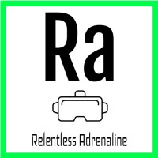
Relentless Adrenaline | Google DeepMind
Mechatronics Engineer
Sept 2024 – Present
Mountain View, California · On-site
Google DeepMind
Mineral.ai
Systems Integration Engineer (via Akkodis)
Jul 2023 – Sept 2024
Mountain View, California · On-site
Mineral Team
Mineral.ai
Hardware Test Engineer (via Modis)
Jan 2022 – Aug 2023 · 1 yr 8 mos
Mineral Team
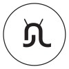
AutoRoboto
Test Engineer III
Jan 2021 – Dec 2021 · 1 yr
Simbe Robotics, Inc.
Robotics Hardware Engineer
Oct 2018 – Jan 2021 · 2 yrs 4 mos
San Francisco, California
Simbe Robotics
A9.com (Amazon)
Quality Assurance Specialist and Dataset Lead
Jan 2017 – Oct 2018 · 1 yr 10 mos
Palo Alto, CA
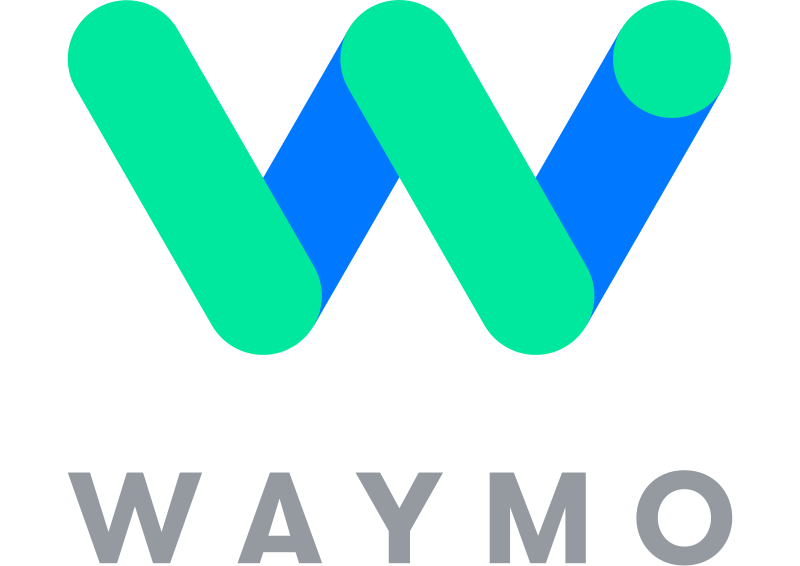
Waymo (via Adecco)
Manufacturing Assembly Test Specialist
Jun 2016 – Dec 2016 · 7 mos
Mountain View, CA
Google Street View (via Adecco)
Senior Street View Manufacturing and Repair Specialist
Sep 2013 – Sep 2015 · 2 yrs
Mountain View, CA
Projects
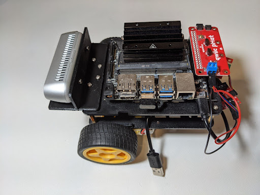
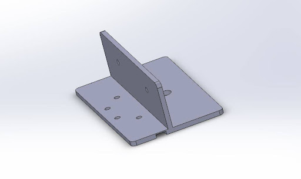
Jetbot RealSense D435i Integration
Designed and fabricated a custom mechanical bracket to securely mount an Intel RealSense D435i depth camera onto the NVIDIA Jetbot Nano platform.
Project Details:
- Mechanical Design: Created a custom 3D-printed mounting bracket to ensure precise camera alignment and stability.
- Constraint Optimization: Bracket was designed to reuse existing mounting holes on the Jetbot chassis, avoiding permanent modifications.
- System Integration: Successfully integrated the RealSense D435i with the Jetson Nano to enable advanced computer vision and depth perception for the Jetbot.
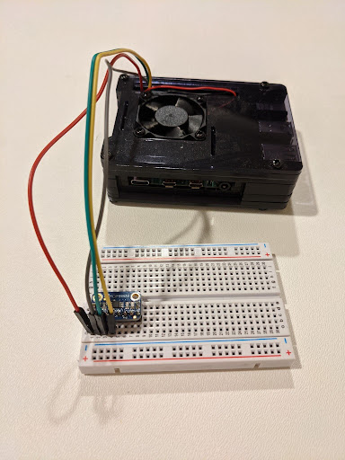
Raspberry Pi Thermal Monitoring System
Designed and implemented a versatile thermal monitoring solution using Adafruit MCP9808 sensors and Python.
Key Achievements:
- Professional Application: Soldered and deployed 5 sensors inside a robot to monitor component temperatures for critical debug and testing.
- Data Analysis: Created a custom Python script to monitor thermal profiles over time and save data to a CSV file.
- Hardware Impact: The collected thermal data was instrumental in developing and implementing a forced-air cooling solution for the next generation of the robot.
- Personal Use: Utilized for home automation and temperature logging (e.g., monitoring a BBQ grill).
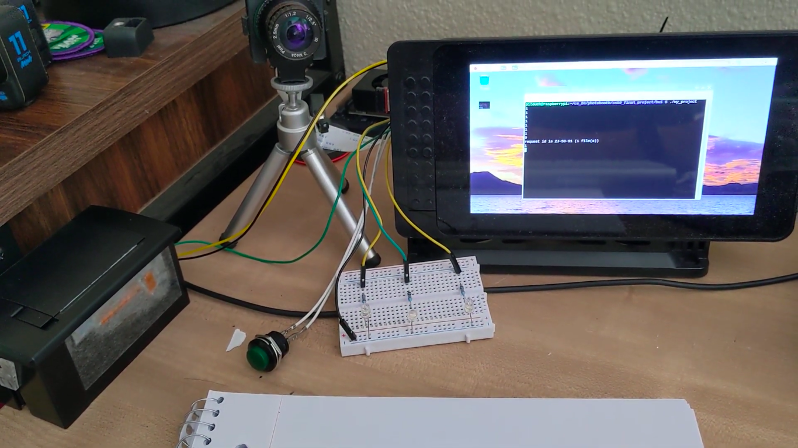
CS50 Final Project: Raspberry Pi Photobooth
A hardware-software integration project built using a Raspberry Pi 3, HQ Camera, and Thermal Printer. This system executes a complete photobooth workflow from a single button press to a printed receipt.
Technical Highlights (C++ and Embedded Systems):
- Language & Structure: Coded in C++ with a modular structure (using separate header files) to learn modern compilation processes and create a single executable binary.
- Hardware Control: Implemented GPIO control to manage a countdown sequence using three LEDs and trigger image capture via a pushbutton.
- Image Processing: Used
raspistillto capture images at an optimized 512x384 resolution for clarity and speed on the thermal printer. - Advanced Debugging: Overcame significant challenges with thermal printer CUPS configuration and power supply instability through hardware and software troubleshooting.
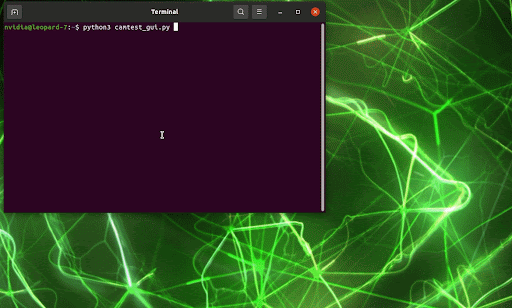
Automated Data Capture GUI (Python)
Developed a Python-based GUI application (using Tkinter) to streamline and automate the image and data collection workflow.
Key Achievements:
- Workflow Automation: Reduced setup time and eliminated manual errors by automating the end-to-end data capture process.
- System Integration: Integrated logic to automatically detect USB insertion as the primary trigger for the capture process.
- File Management: Automatically generated a timestamped project folder for each run, ensuring organized data logs.
- Execution Control: Programmatically executed a custom capture binary directly from the GUI interface.
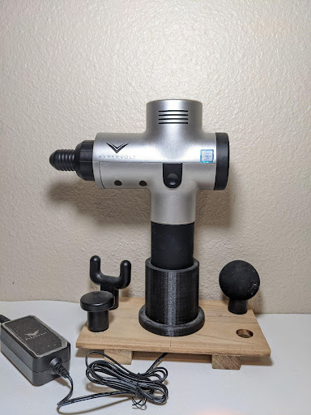
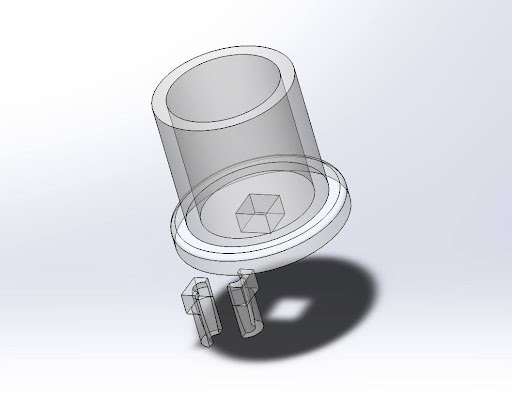
Hypervolt Vertical Docking Station
Designed and fabricated a vertical docking station to address a key point of failure: preventing the barrel jack power cable from fraying due to constant strain while charging.
Project Details:
- Material: Utilized an existing cutting board as the primary structural material.
- Mechanical Modification: Precisely measured and drilled holes to create a secure, vertical cradle for the Hypervolt device.
- Accessory Storage: Incorporated additional drilled holes for organized storage of various attachment heads.
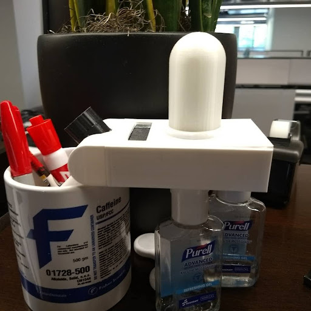
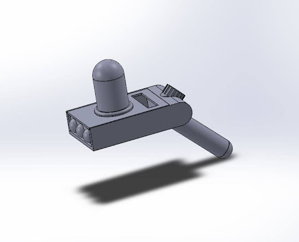
Rick and Morty Portal Gun Prop
A custom-fabricated prop built for a friend who is a major fan of the Rick and Morty series.
Project Details & Prototyping:
- Iterative Design: Completed after three design and fabrication prototypes, focusing on form factor and integrated electronics.
- Electronics: Wired six internal LEDs in parallel with a resistor for illumination.
- Custom Controls: Integrated an old flashlight switch into the main knob to create a rotational on/off switch mechanism.
- Aesthetics: Used Glow-in-the-Dark PLA for select printed parts for an authentic look.
Certifications
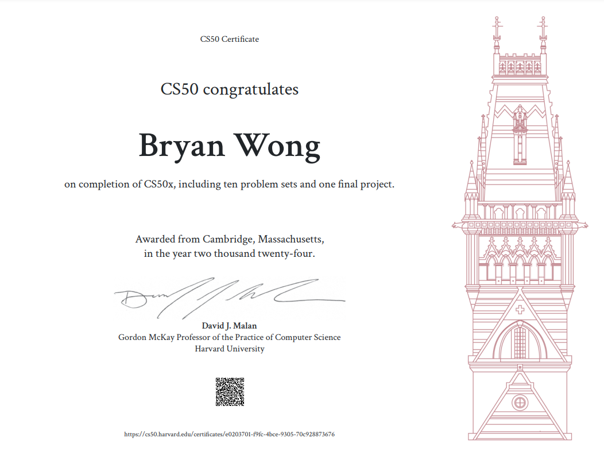
CS50's Introduction to Computer Science (CS50X)
Completed Harvard's introductory computer science course, covering algorithms, data structures, and web programming.
View Certificate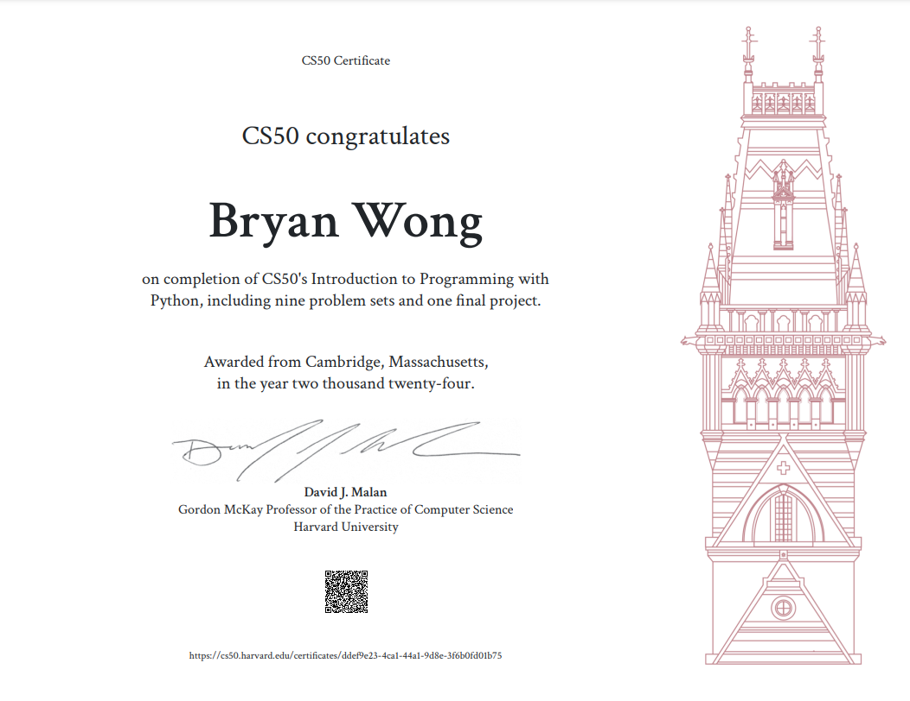
CS50's Introduction to Programming with Python (CS50P)
Completed Harvard's Python programming course, focusing on problem-solving, libraries, and application development.
View Certificate